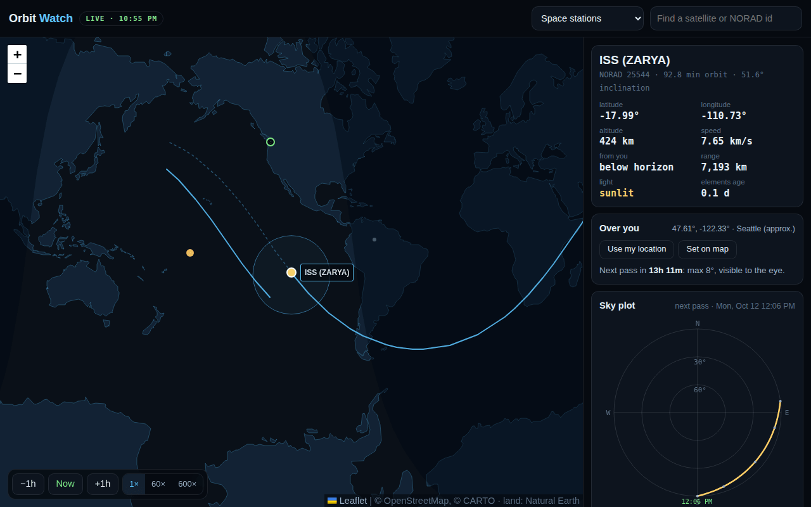

Live map
Every satellite in the group, the selected one's ground track (behind it dashed, ahead of it solid), its footprint (everywhere that can see it), and the day-night line with the point under the sun.
Where every satellite is right now, where it's going, and when it next crosses your sky, propagated with SGP4 right in your browser from CelesTrak's element sets.
Live: the ISS by default, ten groups, any NORAD id

At its brightest the ISS outshines everything in the sky but the Sun and the Moon, and most people have never knowingly seen it, because nobody told them when to look. Orbit Watch takes the same element sets every tracker uses, runs the orbit model on your own device, and tells you the next time a satellite rises over you, where it comes from, how high it climbs, and whether you'll actually be able to see it.
Every satellite in the group, the selected one's ground track (behind it dashed, ahead of it solid), its footprint (everywhere that can see it), and the day-night line with the point under the sun.
The next three days of passes: rise, highest point and set, with compass directions and times. Your location is a city-level guess from your connection until you share a better one or pick a point.
A pass is marked visible when the satellite is in sunlight while your sky is dark (sun below −6°), which is the only time you'll see it by eye. The others are marked as daylight or in Earth's shadow.
A polar plot of the pass across your sky, and a clock you can run at 60× or 600× or step an hour at a time. A reminder can fire two minutes before a pass while the page is open.
CelesTrak publishes two-line element sets: a satellite's orbit, fitted to radar and optical tracking at one moment (the epoch). SGP4, the standard model those elements are made for, turns them into a position at any time, accounting for Earth's oblateness and atmospheric drag. satellite.js runs it here; no tracking server is involved.
Element sets go through the site's own route, cached at the edge for two hours (CelesTrak asks that each set be pulled at most that often). This browser keeps the last copy, so the tracker still opens and predicts with no signal.
Cartograph is the wide view of everything out there. Orbit Watch follows one object in real time. The same propagation will feed Cartograph's live-satellite layer.
SGP4 is good to about a kilometre near the epoch and drifts a few kilometres a day after it, so the elements' age is shown next to every position. Pass times are good to a few seconds for fresh elements. Visibility uses a cylindrical Earth shadow and a low-precision sun, which is plenty for "will I see it" but not for timing an eclipse entry to the second. Reminders only fire while the page stays open; there's no push server behind them.
Something the size of a football pitch crosses your sky most nights. Now you'll know when.
more in sky & worldkeep scrolling · it opens right here